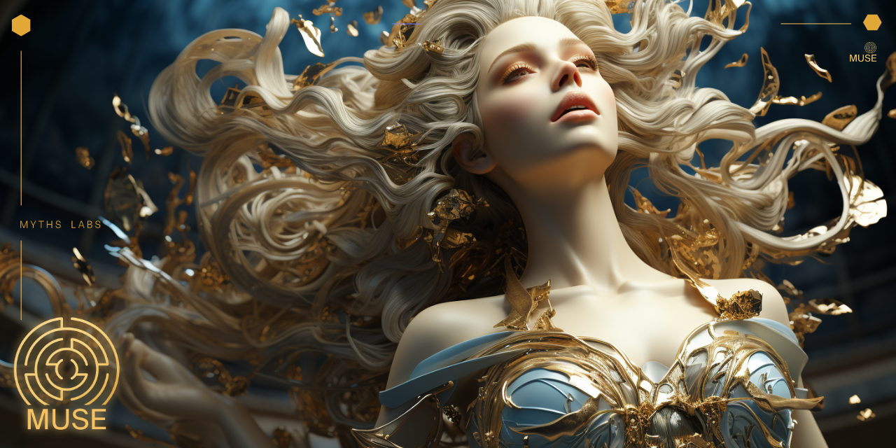

"I'm a solo founder running 3 products with AI. 15-20 conversations a day. Without MUSE, I'd spend half my time re-explaining context."
JC
Creator of MUSE · @SunshiningDay

AGENTS.md tells your AI what your project is.
MUSE tells it who it
is, what it remembers, and what it can do.
/resume — full context restored in 5 seconds/bye — one-click save, zero input needed/distill — lessons extracted to long-term memorySix building blocks. All Markdown. All git-tracked.
Daily logs (memory/) capture what happened. MEMORIES.md distills what matters.
Short-term meets long-term.
Build, QA, Growth, Strategy — each stays in its own lane. Your AI won't suggest marketing while you're debugging.
Async messaging across roles with delivery tracking. Strategy decides, Build ships, QA verifies — all through Markdown.
6 JSON-RPC tools in a single Bash script. Claude Code reads your project status through the standard protocol. No Node. No Python.
Git workflows, debugging, security guard, coordinator mode, iterative retrieval, deep-dive analysis — pre-built skills your AI loads on demand.
Silent checkpoints every 15 rounds. Context blowout? /resume crash picks up where you left
off. At most 10 rounds lost.
The features that make MUSE different
5 core principles: Boil the Lake, Search Before Building, Ship the Narrowest Wedge, Memory Over Momentum, Governance Is Speed. Inspired by gstack.
/sprint Pipeline7-phase feature dev workflow: Think → Plan → Build → Review → Test → Ship → Reflect. Each phase loads the right skill automatically.
Pre-commit secret leak prevention. Catches API keys, tokens, private keys, .env files before they enter git history. Born from a real incident.
Visit muse.mythslabs.ai/dashboard — load your project, see roles, memory, skills visualized. 100% client-side.
recommend, categories, export, registry — discover,
browse, share, and install community skills.
UPDATES supersede old facts with ~~strikethrough~~. EXTENDS append sub-details. DERIVES link
inferences. Auto-Expiry tags entries as [PERMANENT], [TEMPORAL], or
[EPISODIC] — expired memories fade automatically.
/resume → work → /bye — that's the whole workflow

Auto-converts to the right format for each tool
install.sh --tool claude
install.sh --tool cursor
install.sh --tool windsurf
install.sh --tool gemini
install.sh --tool codex
install.sh --tool openclaw
install.sh --tool opencode
git clone https://github.com/myths-labs/muse.git
cd muse && ./scripts/install.sh --target /path/to/your-project
/resume → work → /bye
Format specs tell your AI the rules. Memory infra stores embeddings. MUSE governs the whole system.
| Feature | MUSE | mem0 | memsearch | lossless-claw |
|---|---|---|---|---|
| Dependencies | Zero | Python + DB | Milvus + Node | SQLite + DAG |
| Format | Pure Markdown | Vector DB | Vector DB | Custom DAG |
| Tool Support | 7 tools | API only | Claude Code | OpenClaw |
| Role System | ✅ Multi-role | — | — | — |
| Cross-role Directives | ✅ 📡 Protocol | — | — | — |
| MCP Server | ✅ Built-in | — | ✅ | — |
| Graph Memory | ✅ UPDATES/EXTENDS/DERIVES | Vector similarity | Vector similarity | DAG nodes |
| Smart Forgetting | ✅ Auto-Expiry tags | TTL-based | — | — |
| License | MIT | Apache 2.0 | MIT | MIT |
/resume
Boot — auto-restore context & start work
/bye
One-click wrap-up — save, sync, archive
/sprint
Feature pipeline: Think→Plan→Build→Review→Test→Ship
/retro
Weekly retrospective from memory + git history
/ctx
Context health check (🟢🟡🔴)
/distill
Condense daily logs → long-term memory
/sync
Cross-role synchronization
/settings
Change language, model, preferences
"I'm a solo founder running 3 products with AI. 15-20 conversations a day. Without MUSE, I'd spend half my time re-explaining context."